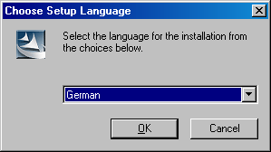
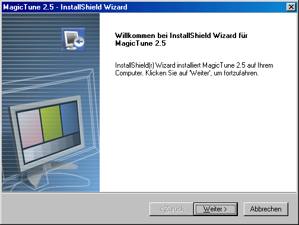
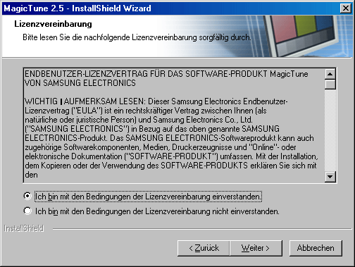
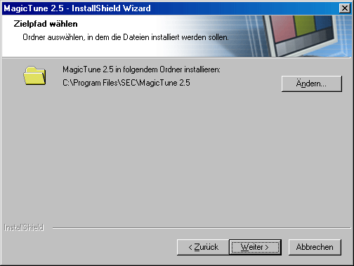
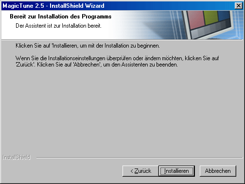
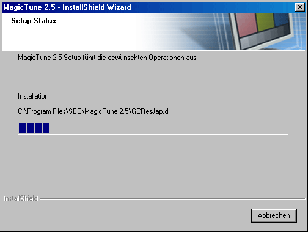
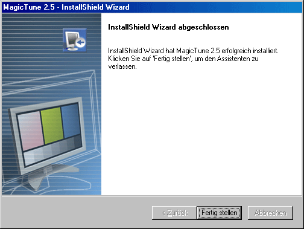
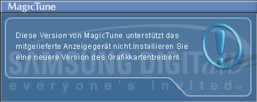

- Legen Sie die Installations-CD in das CD-ROM-Laufwerk ein.
- Klicken Sie auf die MagicTune Installationsdatei.
- Wählen Sie die Installationssprache aus und klicken Sie auf „Weiter“.

- Wenn das Fenster des Installationsassistenten erscheint, klicken Sie auf „Weiter“.

- Markieren Sie „Ich bin mit den Lizenzbestimmungen einverstanden“ , um die Nutzungsbedingungen zu akzeptieren.

- Wählen Sie einen Ordner aus, in den das MagicTune Programm installiert werden soll.

- Klicken Sie auf „Installieren”.

- Das Fenster „Setup-Status” erscheint.

- Klicken Sie auf „Abbrenchen“.

- Wenn die Installation abgeschlossen ist, erscheint das Programmsymbol von MagicTune 2.5 auf Ihrem Desktop.
 Doppelklicken Sie auf das Symbol, um das Programm zu starten. Doppelklicken Sie auf das Symbol, um das Programm zu starten.
|

|
 |
Je nach den Spezifikationen des Computersystems oder Monitors erscheint manchmal das MagicTune-Ausführungssymbol nicht. Drücken Sie in diesem Fall die Taste F5. |
|
|
- Wenn die Installation erfolgreich war, erscheint das
folgende Fenster.

- Die folgende Fehlermeldung weist darauf hin, dass Ihr
Computer eine Grafikkarte verwendet, die nicht von MagicTune
unterstützt wird.


|
Die Installation von MagicTune
2.5 kann von solchen Faktoren wie Grafikkarte, Motherboard und Netzwerkumgebung
beeinflusst werden.
Sollten Probleme bei der Installation auftreten,
schlagen Sie bitte unter „Problembehebung“ nach.
Betriebssysteme
- Windows 98 SE
- Windows Me
- Windows NT
- Windows 2000
- Windows XP Home Edition
- Windows XP Professional
Hardware
- 32 MB Arbeitsspeicher oder mehr
- 25 MB Festplattenspeicherplatz oder mehr
* Für weitere Informationen besuchen Sie bitte die MagicTune Internetseite.
|

 Systemanforderungen
Systemanforderungen Installation
Installation